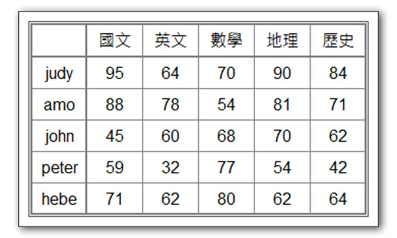

學習如何將多筆零散數據整合，建立系統化的資料索引。

<?php
$students = [
"judy" => ["國文" => 95, "英文" => 64, "數學" => 70, "地理" => 90, "歷史" => 84],
"amo" => ["國文" => 88, "英文" => 78, "數學" => 54, "地理" => 81, "歷史" => 71],
"john" => ["國文" => 45, "英文" => 60, "數學" => 68, "地理" => 70, "歷史" => 62],
"peter" => ["國文" => 59, "英文" => 32, "數學" => 77, "地理" => 54, "歷史" => 42],
"hebe" => ["國文" => 71, "英文" => 62, "數學" => 80, "地理" => 62, "歷史" => 64],
];
echo "<table>";
echo "<tr><td></td><td>國文</td><td>英文</td><td>數學</td><td>地理</td><td>歷史</td></tr>";
foreach ($students as $student => $scores) {
echo "<tr><td>$student</td>";
foreach ($scores as $score) {
echo "<td>$score</td>";
}
echo "</tr>";
}
echo "</table>";
?>| 國文 | 英文 | 數學 | 地理 | 歷史 | |
| judy | 95 | 64 | 70 | 90 | 84 |
| amo | 88 | 78 | 54 | 81 | 71 |
| john | 45 | 60 | 68 | 70 | 62 |
| peter | 59 | 32 | 77 | 54 | 42 |
| hebe | 71 | 62 | 80 | 62 | 64 |
學習重點
Associative Array) 巢狀結構儲存複雜資料。foreach 雙層迴圈拆解多維陣列的鍵 (Key) 與值
(Value)。foreach ($students as $name => $scores) {
// 第一層處理學生姓名
foreach ($scores as $score) {
// 第二層處理學科成績
}
}<table> 標籤以結構化呈現數據。